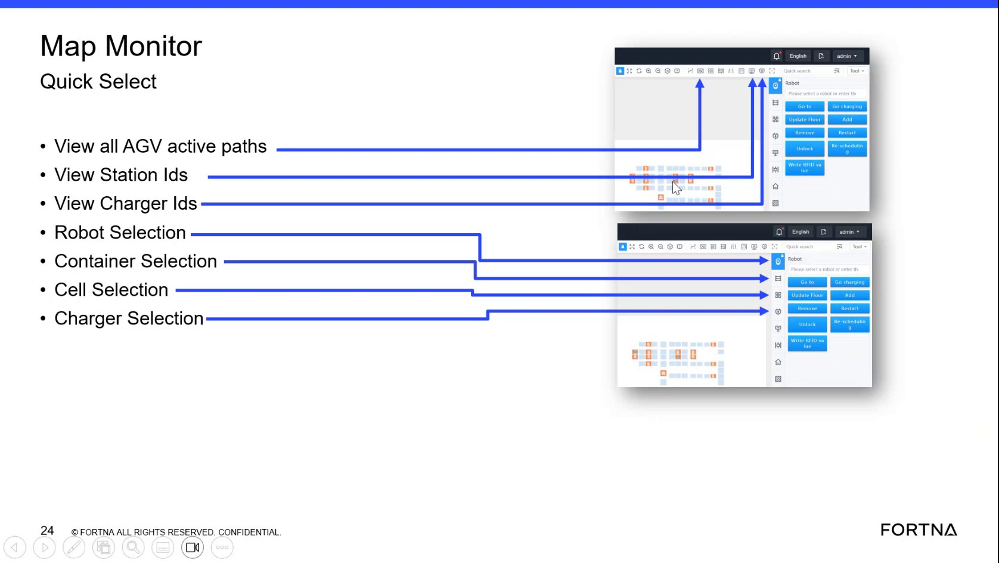

| Procedure ID | proc_use_map_robot_selection_go_to_reposition_agv_v1 |
|---|---|
| Title | Use Map Robot Selection “Go to” to reposition an AGV to a selected square |
| Procedure Type | recovery |
| Primary Role | L1_support |
| Support Safe | Yes |
| Capability Tags | robot_command_or_task_state |
| Access Surface | rms_ui |
| Audience Roles | L1_support, operator |
| Failure Pattern Tags | None |
| Validation Status | needs_sme_review |
| Merge Status | source_finalized |
Use the RMS / fleet status UI map’s Robot Selection “Go to” workflow to send an AGV that is not currently in a task to a selected destination square. The source presents this as a quick recovery method for a stalled/blocked situation (example: a tipper goes down and an AGV will not leave; after the tote is removed, the AGV can pick up a new task).
When an AGV is not in a task and you need to recover quickly by sending it to a chosen map square using Robot Selection “Go to” (example use case described: a tipper goes down and an AGV will not leave; after the tote is removed, the AGV can resume by picking up a new task).

Responsible role: L1_support
Instruction:
In the RMS / fleet status UI, open the map view that allows selecting operational objects (AGVs/cells). Avoid clicking only on the map background.
Expected result:
You can select operational objects on the map (AGV/cell selection is recognized by the UI).
Responsible role: L1_support
Instruction:
On the RMS map, select the specific AGV object (do not select a generic map area).
Expected result:
The selected AGV is identified by the UI as the target for Robot Selection.
Responsible role: L1_support
Instruction:
After selecting the AGV on the RMS map, choose the Robot Selection “Go to” function for that AGV.
Expected result:
The UI enters the “Go to” flow for the selected AGV (ready to choose a destination square).
Responsible role: L1_support
Instruction:
In the “Go to” flow, select the destination square on the RMS map where you want the AGV to go.
Expected result:
A destination square is selected as the target for the AGV “Go to” command.
Responsible role: L1_support
Instruction:
Select “Confirm” to send the selected AGV to the selected destination square.
Expected result:
The “Go to” command is confirmed and issued for the selected AGV to the selected square.
Stop or Escalate If:
Responsible role: L1_support
Instruction:
After issuing “Go to” and clearing the described blockage condition (example: tote removed), observe that the AGV resumes by picking up a new task.
Expected result:
The AGV picks up a new task after its tote has been removed (as described in the recovery example).
Stop or Escalate If: